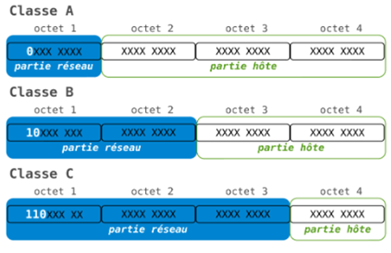

Resume du Chapitre III
Le Modèle OSI
Les composants d’un réseau informatique
Un réseau informatique est composé de plusieurs éléments, tels que les cartes réseau et les switches.
Les cartes réseau permettent à un ordinateur de se connecter à un réseau, tandis que les switches sont utilisés pour connecter plusieurs appareils sur un réseau local (LAN).
Les switches utilisent des adresses MAC pour permettre aux appareils de communiquer entre eux.
Les cartes réseau sont des composants matériels qui permettent à un ordinateur de se connecter à un réseau, comme Internet ou un réseau local, en transmettant et en recevant des données via des protocoles de communication spécifiques tels que TCP/IP.
Un switch est un composant matériel utilisé pour connecter des appareils sur un réseau local (LAN) en utilisant des adresses MAC.
Le modèle OSI :
Le modèle OSI (Open System Interconnections) est un modèle de référence pour les communications de réseau. Il divise les communications en sept couches distinctes, chacune ayant des fonctions spécifiques liées à la communication de données entre les appareils de réseau. Les sept couches sont : physique, liaison de données, réseau, transport, session, présentation et application.
Le Modèle TCP/IP :
Est un ensemble de protocoles utilisées pour la communication et l’acheminement des données sur les réseaux informatiques. Il est largement utilisé comme référence pour la conception et la mise en œuvre des réseaux modernes.
Le modèle TCP/IP est divisé en quatre couches principales :
1-la couche application : elle comprend les protocoles qui permettent aux applications informatiques de communiquer entre elles.
2-la couche transport : elle est responsable de l’établissement du contrôle et de la terminaison des connextions de communication.
3-la couche internet : elle assure le routage et l’adressage des paquets de données à travers le réseau.
4-la couche accès réseau : elle gère la transmission physique des données sur les réseaux local.

L’dressage :
L’dressage est essentiel pour identifier et localiser les appareils dans les réseaux informatiques.
- Ladresse IP :
L’adresse IP est utilisée pour l’acheminement des paquets sur internet. Y’a deux types adresse IP version 4 (IPv4) et adresse IP version 6 (IPv6).
L’adresse IPV4 :
IPV4 est une suite de 32 bits utilisé pour identifier les appareils dans un réseau IP. Elle est représentée sous forme de quatre octet et s séparés par des points.
On a quatre types de IPV4, adresse réseau, adresse de diffusion, adresse hôtes et le masque de réseau et de sous réseaux.
